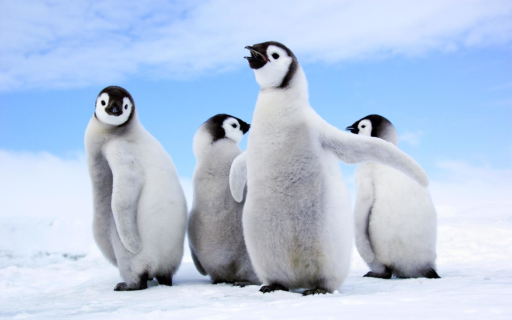

The name penguin was originally given to an unrelated bird species – the now-extinct great auk, which was a large, flightless, black and white bird. When explorers first encountered wild penguins, they used the same name for the new creatures they were seeing. Penguins are aquatic, flightless birds that are highly adapted to life in the water. Their distinct tuxedo-like appearance is called countershading, a form of camouflage that helps keep them safe in the water. Penguins do have wing-bones, though they are flipper-like and extremely suited to swimming. Penguins are found almost exclusively in the southern hemisphere, where they catch their food underwater and raise their young on land. Penguins are social birds. Many species feed, swim and nest in groups. During the breeding season, some species form large groups, or “rookeries”, that include thousands of penguins. Each penguin has a distinct call, allowing individuals to find their mate and their chicks even in large groups.
The penguin species with the highest population is the Macaroni penguin with 11,654,000 pairs. The species with the lowest population is the endangered Galapagos penguin with between 6,000-15,000 individuals. As the young penguins grow, adults leave them in groups of chicks called crèches while they leave to fish. There is a reason for the timing of emperor penguins' hatching. By December, when the Antarctic weather has warmed somewhat, the ice the penguins occupy begins to break up, bringing open waters closer to the nesting sites. Now the chicks are old enough to take to the seas and fish for their own food. I chose to write about penguins because Adolfo, a friend of mine, is infactuated by them and so asked me to make a website for his cause. Overall I just want to express his love for penguins, especially the bald one on the home page. Penguins are flightless birds, and I'm scared of emperor penguins. If penguins lay eggs, do they like poop them out?